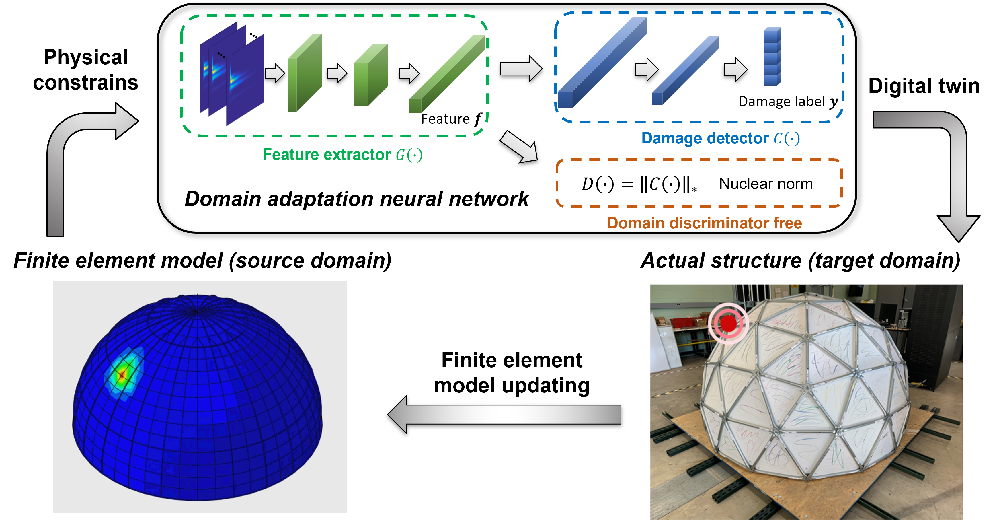
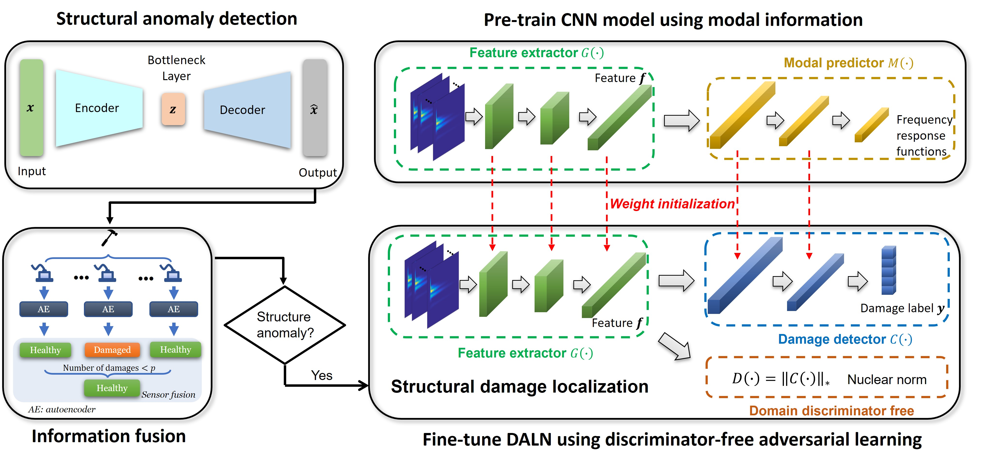
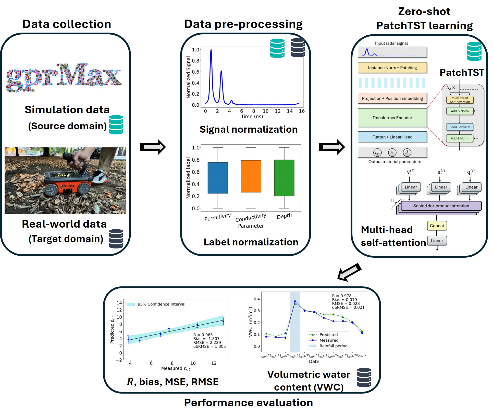
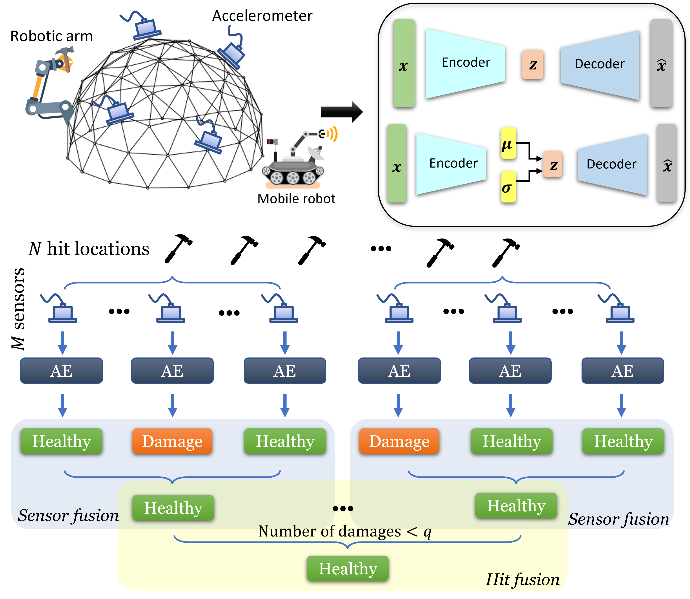
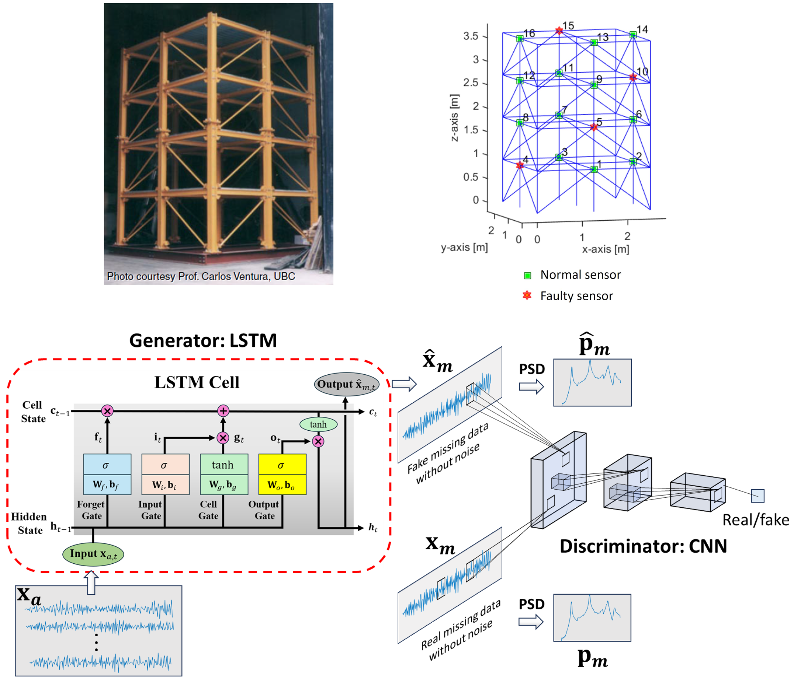
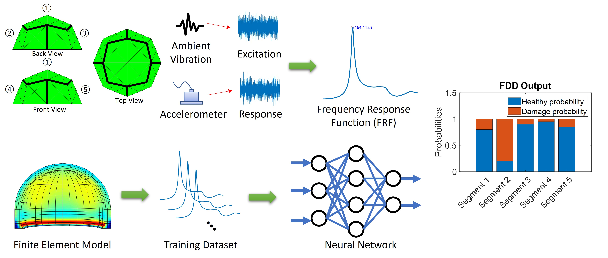

Recently, the real-world application of deep learning-based methods has been constrained by the challenge of generating diverse damage cases for training. While finite element models (FEMs) have been employed to simulate a variety of damage scenarios, mismatches between FEMs and actual structures persist due to uncertainties in materials, boundary conditions, construction processes, and aging. To bridge this gap, a hierarchical physics-informed domain adaptation (HierPhyDA) approach is proposed to enable digital twin-enhanced structural damage detection and localization. HierPhyDA synthesizes features from FEMs to mirror those from actual structures and emulates authentic vibration signatures. This training enriches the model with a behavior reflective of actual structures, enabling it to serve as a digital twin of the physical structure. Specifically, the approach outperforms existing state-of-the-art methods when damaged state data from the actual structure are excluded from training, and the damage cases from the FEM used for training are mutually exclusive to those of the actual structure. This breakthrough is pivotal for ensuring real-world applicability, enhancing damage identification performance, and prolonging structural lifespan, resilience, and sustainability.
Zixin Wang, Mohammad R. Jahanshahi*, Alana Lund, Adnan Shahriar, and Arturo Montoya. Physics-informed machine learning for hybrid digital twin-enhanced damage detection and localization. Journal of Engineering Mechanics, 2025, 151: 04025080. [Paper Link]
Zixin Wang* and Mohammad R. Jahanshahi. Integrated physics-informed machine learning framework for structural damage detection, localization, and severity classification. Sensors, 2026, 26(15): 4976. [Paper Link]

Subsurface material characterization, such as soil moisture estimation, using ground-penetrating radar (GPR), supports remote sensing applications such as precision agriculture and wildfire risk assessment. Traditional physics-based methods, such as iterative model updating, incur high computational costs, whereas data-driven approaches enable significantly faster inference but are constrained by limited labeled real-world data for training. To address these challenges, this work proposes a zero-shot learning framework based on the patch time-series transformer (PatchTST) to estimate subsurface material properties from GPR measurements. The model is trained exclusively on synthetic data and deployed directly on experimental measurements, enabling simulation-to-reality (sim2real) transfer. The framework is evaluated in laboratory and field tests involving single- and two-layer material configurations. The results indicate that PatchTST effectively captures local signal representations through patch-wise tokenization and global dependencies via multi-head self-attention, particularly for long GPR time series.
Zixin Wang*, Ishfaq Aziz, Adam Watts, and Mohamad Alipour. Time-series transformers for zero-shot GPR-based subsurface material characterization. IEEE Transactions on Geoscience and Remote Sensing, 2026. [Paper Link]
Related Work on Sim-to-Real Radar-Based Subsurface Sensing
Zixin Wang*, Ishfaq Aziz, and Mohamad Alipour. Sim-to-real GPR-based subsurface sensing: physics-guided hierarchical domain adaptation with deep adversarial learning. IEEE Journal of Selected Topics in Applied Earth Observations and Remote Sensing, 2026, 19: 27349-27382. [Paper Link]
Zixin Wang*, Ishfaq Aziz, and Mohamad Alipour. Zero-shot radar-based subsurface sensing with resolution- and domain-invariant Fourier neural operators. Applied Soft Computing, 2026 (Under Review).

Accurate detection of structural anomalies is essential for ensuring the resilience of structural systems. To address this need, a structural anomaly detection approach has been developed leveraging unsupervised autoencoders, active sensing, and information fusion. Active sensing involves strategically exciting the structure at specific locations. Data collected from multiple sensors through exciting the structure at various locations is analyzed and fused to improve anomaly detection accuracy. The information fusion strategies enhance the approach's robustness to structural uncertainties and measurement noise. Additionally, the approach addresses practical challenges such as limited sensor availability and insufficient data. This approach outperforms state-of-the-art methods in detecting faults in real-world frame and dome structures.
Zixin Wang*, Sikandar Ali Khokhar, Mohammad R. Jahanshahi, Yuguang Fu, Ilias Bilionis, Amin Maghareh, and Shirley J. Dyke. Unsupervised anomaly detection based on deep autoencoders, information fusion, and active sensing. Structural Health Monitoring, 2026, 0(0): 14759217251410304. [Paper Link]

To address data loss resulting from sensor faults in harsh operating environments (e.g., deep space habitats), a stacked long short-term memory (LSTM)-based generative adversarial network (GAN) approach is proposed to impute missing acceleration data from faulty sensors. The approach demonstrates robust performance in reconstructing missing data in both the time and frequency domains for bridge and frame structures, even under real-world noise conditions and with multiple faulty sensors. This capability underscores its potential to enhance sensor fault tolerance in safety-critical systems by accurately restoring data from malfunctioning sensors, thereby strengthening the system's resilience.
Zixin Wang*, Malleswari Kachireddy, Tarutal Ghosh Mondal, Wen Tang, and Mohammad R. Jahanshahi. Time-frequency informed stacked long short-term memory-based generative adversarial network for missing data imputation in sensor networks. Engineering Applications of Artificial Intelligence, 2025, 155: 110973. [Paper Link]

To ensure reliable sensor data for robust decision-making,a sensor fault detection approach using convolutional autoencoders (CAEs) is developed to identify faults in temperature and pressure sensors within deep space habitats. The proposed method is evaluated using a habitat simulator (HabSim), where the effects of temperature-pressure coupling and the number of faulty sensors on the CAE's performance are analyzed. The approach can utilize redundant information from other sensors to estimate the correct value for the faulty sensor. Another key feature of this approach is its flexibility to adapt to changes in the number of sensors without requiring network re-design or retraining. This capability allows the CAE to function seamlessly even when sensors are added or removed, supporting the resilient operation of space habitats.
Zixin Wang, Mohammad R. Jahanshahi*, Mohsen Azimi, and Shirley J. Dyke. Sensor fault detection in smart extraterrestrial habitats using unsupervised learning. AIAA Journal, 2024, 62(9): 3225-3243. [Paper Link]

HabSim is a plug-and-play environment developed in MATLAB Simulink to simulate a space habitat. It comprises five physics-based subsystems: the structural protective layer, structure, interior environment, environmental control and life support system, and power system. HabSim can simulate various hazardous states in a space habitat, including micrometeorite impacts and fires. To enhance the habitat’s resilience through structural health monitoring, a data-driven approach for structural damage identification is developedand integrated it into HabSim. The identified damage results are utilized by the health management system, facilitating optimized decision-making for deploying robotic agents to conduct structural repairs.